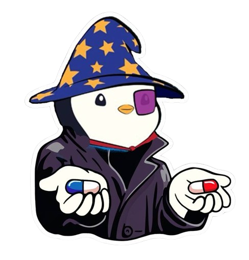

ZULTS, known for their quirky online behaviors and endearing clumsiness in conversation, have puzzled other Discord users and observers alike. The collective actions of ZULTS often reveal synchronized antics, seemingly irrational decision-making, and an uncanny ability to appear utterly clueless yet lovable. This has led to the development of the “Single Brain Cell Theory” for ZULTS.

THE ZULT THEORY
Evidences Supporting the Theory
THEORY #1 Watermelon Love
Love for Melons:
All ZULTS exhibit an inexplicable, unanimous love for melons. This shared preference suggests a single, overriding cognitive influence guiding their tastes and desires.
THEORY #2 Food Obssessions
Food Discussions:
ZULTS are known to incessantly talk about food. This persistent topic of conversation points to the single brain cell’s limited range of interests, predominantly centered around sustenance and culinary delights.
THEORY #3 Dectator Possibly Spam
Unified Leadership - Possibly Spam:
It is speculated that there exists one leader among the ZULTS, known as “Possibly Spam.” This leader appears to be the primary holder of the brain cell, dictating the actions and decisions of the group, often with a whimsical or nonsensical directive.
THEORY #4
Dictatorial Tendencies of Possibly Spam:
Possibly Spam, as the supposed dictator, exhibits control over the brain cell, ensuring that it is only used for purposes that align with their quirky governance. This leads to the collective, often humorous behavior observed among ZULTS.